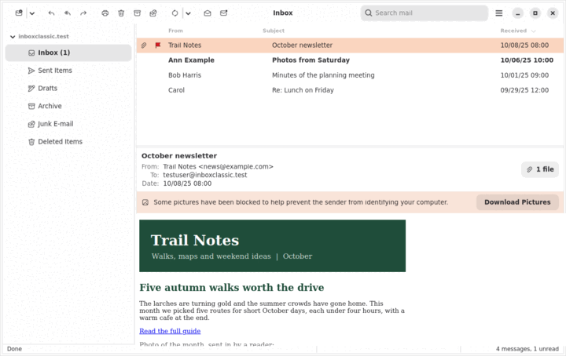

Fereastra principală
Părțile ferestrei principale: lista de foldere, lista de mesaje, panoul de citire, bara de instrumente și bara de stare.

- Lista de foldere, în stânga, începe cu Mesaje primite și Semnalizate, apoi celelalte foldere. Cu două sau mai multe conturi, vizualizarea Toate mesajele primite apare prima, urmată de vizualizările comune pentru mesajele trimise și schițe. Urmează Semnalizate, apoi conturile cu celelalte foldere. Numele folderelor cu mesaje necitite sunt afișate cu caractere aldine, urmate de numărul acestor mesaje.
- Lista de mesaje, în dreapta sus, conține mesajele folderului selectat. Mesajele necitite sunt afișate cu caractere aldine. Faceți clic pe titlul unei coloane pentru a sorta după ea și faceți din nou clic pentru a inversa ordinea.
- Panoul de citire, sub listă, afișează mesajul selectat.
- Bara de instrumente, sus, conține comenzile cele mai folosite, cum ar fi Mesaj nou, Răspuns și Trimitere/primire, precum și caseta de căutare.
- Bara de stare, jos, arată numărul de mesaje, activitatea curentă a aplicației și ultima problemă întâmpinată.
Trageți separatoarele dintre panouri pentru a le redimensiona.
Pentru a face loc mesajelor, ascundeți lista de foldere: alegeți Vizualizare > Listă de foldere sau apăsați F9. Butonul pentru bara laterală, la capătul din stânga al barei de instrumente, o ascunde și o readuce. Cât timp este ascunsă, butonul de folder de lângă el afișează folderele.
Meniurile, cum ar fi Fișier și Vizualizare, se află în Meniu principal la capătul din dreapta al barei de instrumente. Faceți clic dreapta pe un mesaj, un folder sau un cont pentru a vedea comenzile disponibile.
Numărul de mesaje necitite al unui folder restrâns include și mesajele din subfolderele ascunse. Același lucru este valabil pentru un cont restrâns. Mesajele din E-mail nedorit și Elemente șterse nu sunt incluse. Faceți clic pe numele unui cont pentru a-i afișa sau ascunde folderele.
Când pornește, Inbox Classic afișează cel mai nou mesaj din Mesaje primite al primului cont sau din Toate mesajele primite când aveți mai multe conturi.
Pentru a deschide acest ajutor, alegeți Ajutor > Cuprins sau apăsați F1. Într-o altă fereastră, aceeași tastă deschide pagina de ajutor pentru fereastra respectivă.